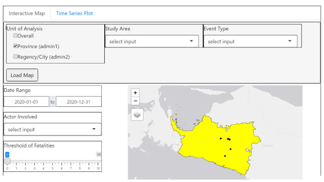
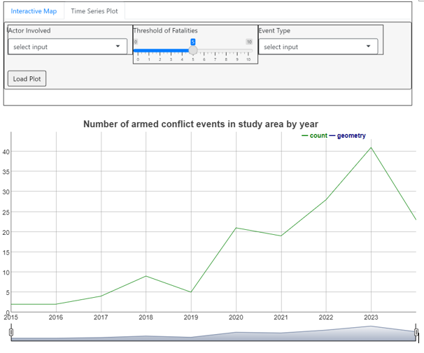

time_series_overall <- points_study %>%
mutate(year = year(dmy(event_date))) %>%
group_by(year) %>%
summarise(count = n()) %>%
dygraph(main = "Number of armed conflict events in study area by year") %>%
dyRangeSelector(dateWindow = c("2015", "2024"))
time_series_overallTake-Home Exercise 3 (Part 2)
5.0 Time Series Graph
5.0.1 Time Series Graph for Entire Study Area
The following code plots the aggregate count of armed conflict events in each year. We group armed conflict events by year and generating a total count for each year. Then, we use dygraph() of the dygraphs package to create an interactive plot of this, and dyRangeSelector() to allow users to pan and zoom to various date ranges.
We can customise this further by creating a function time_series() with arguments that specify criteria for filtering events, namely whether they belong to a given event type, involve a given actor, and result in at least a certain number of fatalities.
time_series <- function(eventtype, actor, min_fatalities) { points_study %>%
filter(event_type == eventtype & (actor1 == actor | actor2 == actor) & fatalities >= min_fatalities) %>%
mutate(year = year(dmy(event_date))) %>%
group_by(year) %>%
summarise(count = n()) %>%
dygraph(main = "Number of armed conflict events in study area by year") %>%
dyRangeSelector(dateWindow = c("2015", "2024")) }
Suppose that a user is interested only in armed conflict events that are of the type “Violence against civilians”, and involved the TPNPB: West Papua National Liberation Army, whether there were any fatalities or not. They would call time_series() as in the following code chunk.
time_series("Violence against civilians", "TPNPB: West Papua National Liberation Army", 0)6.0 UI Design
In the following sections, we create prototypes for each shiny module using the designer package.
6.1 Shiny UI for Interactive Point Map

6.2 Shiny UI for Time Series Graph
